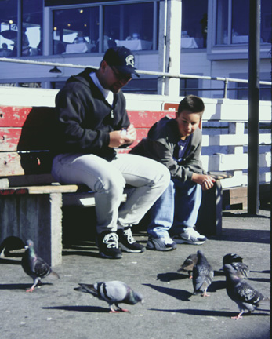

Father and Son. After you pass the crab and lobster tank, to the right you might see a father and son, or perhaps a a crowd of children, anxiously trying to gain the attention of the resident pigeons. In this picture the father and son are sharing a quiet moment while feeding the birds. The photograph was originally produced with late afternoon sun and a 35 mm camera using Provia slide film, shutter speed 125, F11. Photo copyright Andrea L. Arredondo, May 11, 2000.
Updated by Andrea Arredondo
5/19/00